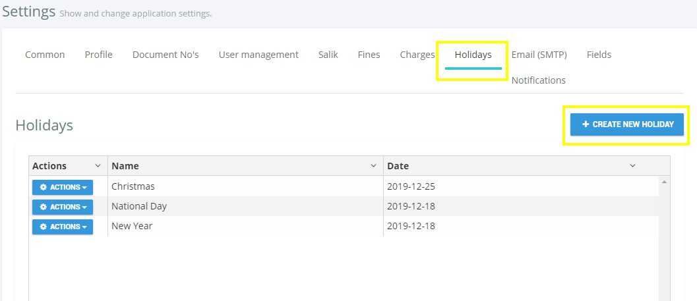
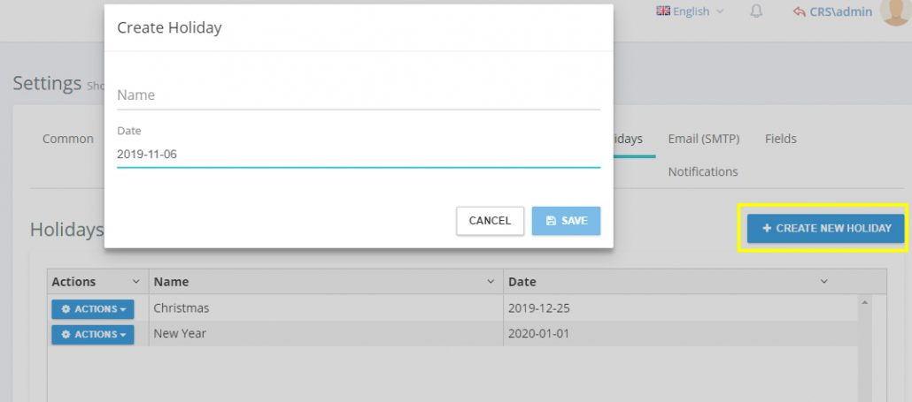

Holiday’s Settings:
- Click on the Administration Tab on the left side Navigation panel and then click on Settings Tab.
- Click on the Holidays tab.
Click on the blue tab on the upper right corner “Create New Holiday”
A window will pop up. Enter the name and select the date from there and press save.
You can create your Public holidays from here on which the buisness remains close.

